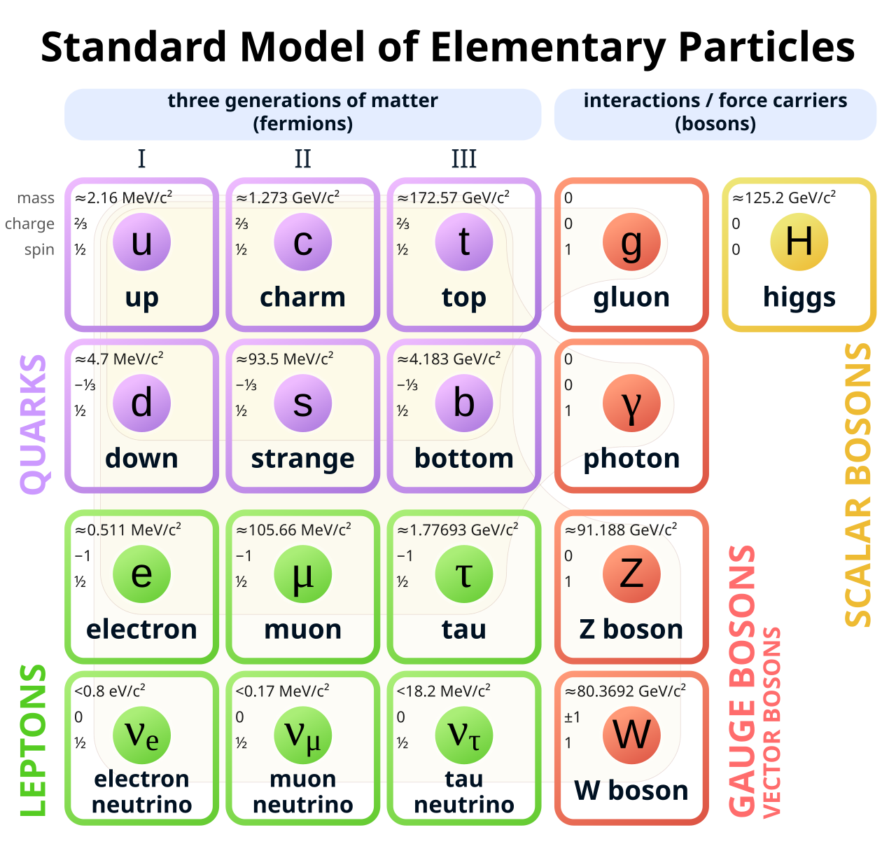

Le modèle standart c'est quoi encore ?
Le problême de la méchanique quantique telle que nous l'avons explqué là, ne prend pas en compte la théorie de la relativité restreinte c'est pour cela que le modèl standart a été créer
Avant le model standart,il faut comprendre la relativité restreinte
Avant de plonger dans le Modèle Standard qui décrit les briques de la matière, il faut comprendre le cadre dans lequel ces particules évoluent. En 1905, Albert Einstein a révolutionné notre vision du monde avec la Relativité Restreinte. La vitesse de la lumière est la limite absolue de l'Univers. Rien ne peut aller plus vite. Mais pour que cette loi soit vraie pour tout le monde, Einstein a dû accepter quelque chose de fou : le temps et l'espace ne sont pas fixes. Ils se dilatent ou se contractent selon la vitesse à laquelle on se déplace. C'est grâce à cette théorie que nous avons compris que la masse et l'énergie sont deux faces d'une même pièce : L'énergie =la masse X la vitesse de la lumière au carré E=mc^2 .Avec Einstein et la relativité restreinte, nous avons compris qu'il existe une limite dans l'Univers, celle de la lumière. Mais il restait une question fondamentale : de quoi est composée la matière qui occupe cette scène ? Si je découpe un objet, puis une molécule, puis un atome... où est-ce que je m'arrête ? C'est là qu'intervient le Modèle Standard. La relativité restreinte seule ne suffisait pas, car elle ne prédisait pas les interactions et les échanges de forces entre les particules. La mécanique quantique seule ne suffisait pas, car elle ne gérait pas correctement les particules allant très vite (proches de la vitesse de la lumière).
Le model standart
Le model standart inclu la relativité restreinte dans la mécanique quantique. Le Modèle Standard est une théorie Quantique des Champs. Il a été construit en utilisant les outils de la mécanique quantique (pour les particules) et les contraintes de la relativité restreinte (pour la vitesse et l'équivalence masse-énergie). De se fait elle inclu des nouvelles particules (qui ont été observer expérimantalement) et les 3 forces fondamentales de l'univers (l'éléctromagnétisme, la forces nucléaire forte et faibles). Dans ces nouvelles particules on identifie 2 famille, celles des Fermions (la matière) se sont comme des briques : ils n'aiment pas partager le même espace (c'est pour cela que la matière est solide). Les Bosons (forces) sont très sociables : ils peuvent s'accumuler les uns sur les autres (c'est pour cela qu'une force peut devenir très intense, comme un champ magnétique puissant).

Ceci est tant dit, nous avons vu que le modèle standart réunissait la relativité restreintedans la méchanique quantique, mais quand est-t-il de relativité générale (la théorie la plus connus que Einstein qui réinvente la façon de comment on décrit la gravité)